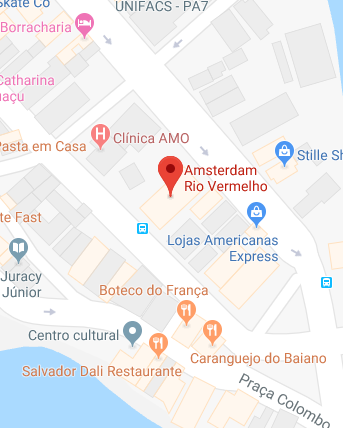

<ion-content padding class="modalmapa">
  <div class="overlay">
    <ion-card class="cardmodalmapa">
      <ion-card-header class="headermodalmapa">
        <p class="titulomodal">
          Localização</p>
      </ion-card-header>
      <div>
        <ion-row>
          <ion-col col-6 class="colmap">
            <button ion-button class="btn-modal " round (click)="fecharMapa2()">
              <ion-icon name="md-close" color="terci"></ion-icon>
            </button>
          </ion-col>
          <ion-col col-6>
            <button ion-button round class="btn-modal ">
              <ion-icon name="md-pin" color="terci"></ion-icon>
            </button>
          </ion-col>
        </ion-row>
        


      </div>
    </ion-card>
  </div>
</ion-content>